balthasar
Memory for agents, and the layout of every request a harness sends. Short-term and long-term in one layer, with its own store — not a library a harness links.
The four things it holds
| the window | what each request holds — balthasar lays it out, and the harness renders it |
| the session | what happened in this run, verbatim — the only copy of what was said |
| the project | what is true here, how things are done, and the rules a person gave |
| everywhere | what is true of you, whichever project you are in |
And the ladder between them: ten kinds of evidence — a person saying so, a correction, a commit, a choice, a repetition, and more — each weighed, and floors deciding what may climb from one level to the next and what is stated rather than hedged. A session is distilled when it has gone quiet, and what recurred across sessions is carried up once a day.
Every request, laid out
Before each request the harness asks for a layout, and balthasar answers with the slots to send, in the order a prompt cache wants: the rules a person gave, the notes drawn from past turns, a catalog of what the project holds, the conversation — word for word, stubbed, or summarised where it has to be — and the memory this prompt calls for, just before it. Nothing is recorded by answering; the harness says what it actually sent.
It never calls a model. When a summary is due, notes could be drawn from a finished turn, or two claims disagree, it hands the harness a job, and takes the answer back. A rule a person later took back is not offered again, and neither is anything drawn from the turns that rule cited.
At a terminal
balthasar remember "we run the tests with make test" balthasar recall "tests" --explain balthasar why <handle> the evidence, not just the number balthasar context exactly what a model would be told balthasar disagreements claims that cannot both be true, waiting on you balthasar settle say which one is right balthasar decay what today's forgetting would take, before it takes it balthasar sessions which runs this project has had balthasar eval measure whether memory earns its place balthasar serve listen for other programs
Where a store lives
<project>/.balthasar/<tool>/project.db what is true here, kept <project>/.balthasar/<tool>/project-transcript.db every run's turns, verbatim <project>/.balthasar/<tool>/<run>/<agent>/memory.db one agent's scratch, dies with the run ~/.local/share/balthasar/<tool>/global.db yours, everywhere
The store lives in the project, hidden like the rest of a checkout's tool state
and with a .gitignore of its own, so renaming a checkout moves its memory
rather than orphaning it. A store found in the older, visible balthasar/ is
moved on sight. Which store a given directory gets is
its own question.
memory role. It binds under $XDG_RUNTIME_DIR/memory/, the role’s name. A write on its socket carries the key it was handed on stdin; a read needs none. magi.memory names another program for the role — see swapping a program.